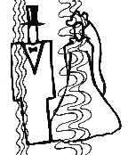

Marcia A. Phillips
20.3.2000
Marcia vytvoøila tyto poznámky pro èištìní, uzemìní, kineziologické svalové testy, detoxifikaci a mnoho dalšího.
Mohou bıt velmi u�iteèné nejen pro Vás, pro Váš vlastní rùst a nanebevzetí, ale i pro vaše klienty a studenty.
Podìkujme Marcii, �e je pro nás vytvoøila!
Seznam denního èištìní pro vzestup.
Aby jste zùstali centrovaní, nepøijímali nechtìné energie, a zùstali spojení s vaším vnitøním vedením, je dùle�ité dennì èistit vaše energetické pole. Kdy� se probudíte, ne� jdete spát, a kdykoli mezi tím, kdy se necítíte dobøe nebo udìláte nìco zraòujícího (napø.: kdy� posuzujete), to je obzvláš� ten správnı èas na vyèištìní vašeho energetického pole. Nejprve se uzemnìte a uveïte do èinnosti kundalini.
1. Je mım zámìrem a JÁ po�aduji stanovit mé hranice. Vše co je v mé pøítomnosti, musí bıt v souladu se mnou. Všechny disharmonické osobnosti, entity nebo JÁ JSEM pøítomnosti musí odejít.
2. Je mım zámìrem v tomto �ivotì kompletnì ukonèit vzestup. Je mım zámìrem a JÁ po�aduji vyèistit jakékoliv energie, entity, monady, JÁ JSEM pøítomnosti a všechny aspekty mé absolutní duše, které nerezonují s mım kompletním vzestupem nebo bo�skım plánem mé duše.
3. Je mım zámìrem a JÁ po�aduji svrchovanost. Nikdo a nic mne nesmí vlastnit.
4. Je mım zámìrem a JÁ po�aduji neškodit na všech úrovních reality-vìdomé, podvìdomé a nevìdomé.
5. Je mım zámìrem a JÁ po�aduji uvolnit všechnu temnou karmu a všechny zastøené, temné aspekty mé duše.
6. Je mım zámìrem a JÁ po�aduji uvolnit všechnu temnou karmu všechny zastøené temné poradce z mého vedení.
7. Je mım zámìrem a JÁ po�aduji zvednout všechny roušky.
8. Je mım zámìrem a JÁ po�aduji uvolnit a rozebrat všechny vymyšlené reality vèetnì tìch vztahujících se k rodinì, myšlenkám tøetí dimenze, vztahùm, práci, spiritualitì, domovu, vlastnictví, atd.
9. Je mım zámìrem a JÁ po�aduji uvolnit všechny genetické a biologické vzory, které nerezonují s mım zámìrem na kompletní vzestup.
10. Je mım zámìrem a JÁ po�aduji uvolnit, roztrhnout, a rozebrat všechny programy závislosti, izolace a oddìlení.
11. Já uvolòuji všechny vztahy se Sedmi Kumary a pøijímám Sedm Zákonù Neubli�ování.
12. Já uvolòuji všechny programy, propletence, svazky, prokletí, pøisahy, dohody, zakletí, ujednání, háèky a smlouvy s hierarchií Thota, Voltaira, Yahweho, Sanandy, Ramy, Melchizedeka, øádu Melchizedeka, Sanat Kumary a Helia.
13. Je mım zámìrem a JÁ po�aduji návrat všech jemnıch tìl (zkrze jemné zlaté síto, aby byly oèistìné ): éterického, emocionálního, tvoøivého, intuitivního a mentálního, a navrácení všech tìl, které jsem já vzal.
14. Já prosím prùvodce léèitele aby opravili všechna má éterická tìla, která jsou roztøíštìná, zlomená, rozdrásaná nebo prasklá, a nechali tyto èásti obnovit a vyléèit.
15 Já prosím prùvodce léèitele aby opravili všechny mé éterické rozvodné kanály, opravili a vymìnili všechny deformované a chybìjící, rozuzlili a opìt pospojovali všechny vodièe.
16. Já uvolòuji jakoukoliv elektrickou energii, která narušuje moje pole nebo vtìlení, a prosím prùvodce léèitele, aby vyjmuli všechny implanáty, které nejsou v souladu s mım kompletním vzestupem.
17. Je mım zámìrem aby se vzory mé temné èásti vynoøily bez projevu ve fyzickém.
DETOXIFIKACE TÌLESNÉ FORMY A AURICKÉHO POLE
Jakmile zvıšíte svoji frekvenci, toxiny jsou uvolòovány z tìla. Je to dùle�eté, detoxifikovat tìlo, aby mohlo snadnìji zvyšovat vibrace, pøemìnit bunìènou strukturu na krystalickou, zmenšit bolesti a pøedcházet nemocem. Navíc, aurické pole mù�e bıt pøeplnìno a potøebuje proèistit.
1. Potraviny: Meloun, hodnì vody-proèistìní vody citronem nebo limetkou je obzvláš� vhodné; detoxifikaèní èaje. Èervené víno, èervené hroznové víno, ananasovı moloun a sladkı muškátovı meloun podporují krystalickou pøemìnu. Jezte, co vaše tìlo po�aduje.
2. Lehké cvièení (nenamáhejte svalstvo)-plavání a chùze.
3. Slunìní.
4. Bublinkové masá�e.
5. Koupele: pou�ijte 0,6kg Epsomovy soli v tak horké vodì, jak jen vydr�íte, Lázeòské procedury, bahenní koupele, a podobné.
6. Drhnutí solí(viz. ní�e).
7. Prohánìjte detofifikaèní a tonizující vibrace vaší kundalíní.
8. �ehnejte vašemu jídlu 1-2 minuty aby se odstranily toxické vibrace a doplnily vibrace, které vaše tìlo potøebuje.
SÙL NA DRHNUTÍ
Ingredience:
V malé krabièce smíchejte 2 šálky soli s 6 polévkovımi l�ícemi jojobového nebo mandlového oleje spolu s 1-2 polévkovımi l�ícemi z ka�dého vonného oleje. Dobøe promíchejte. Dobøe uzavøenou krabièku si dejte do koupelny.
Ka�dı den po sprše dùkladnì rozetøete plnou dlaò soli po celém tìle. Poèkejte 1-2 minuty. Opláchnìte bez pou�ití mıdla do sucha se osušte. Bude to nádhernì vonìt!
Sùl udìlá dvì vìci. Odrhne mrtvé buòky z poko�ky a póry tak budou úèinìjší pøi odstraòování jedù. Zbıvající sùl a olej na poko�ce bude ještì dvì hodiny po osprchování odstraòovat toxiny. Ještì navíc, sùl (a obzvláštì levandule) odstraòuje entity a bloky z vašich jemnıch tìl.
Pøipravené smìsi lze koupit:
V'TAE, 571 Searls Avenue, Nevada City, CA 95959; 800-643-3011.
Dobrı spánek (Neroli, Melissa, Turkish Rose, Rose Geranium, Basil, Organic Lavender)
Andromeda (Frankincense, Myrrh, Sandalwood, Rose Geranium, Organic Lavender)
Svalovı toner (Eucalyptus, Cyprus, Chamomile, Arnica, Ginger)
Velká Nula (32 oz. of pure Pacific sea salts and vitamin E-add your own essential oils)
SVALOVÉ TESTOVÁNÍ (KINEZIOLOGIE)
1. Táhnìte energii odpovídající vašemu pohlaví tìlem dolù a do zemì (široké energetické vlny pro �eny, úzké energetické vlny pro mu�e).
2. Táhnìte kundalíní nahoru páteøí a do ruk. Je velmi dùle�ité, aby vaše energie stoupala nahoru a ne dolù. Po�ádejte vaší JÁ JSEM Pøítomnost, aby vám pomohla.
3. Odpojte se od jakéhokoli jiného zdroje pravdy nebo energie mimo té, která pochází z vaší JÁ JSEM Pøítomnosti a absolutní duše, t.j.,vašeho vnitøní vedení.
4. Po�adujte neutralitu (nezasahování) aby jste neovlivnili vısledky.
5. Otestujte pøipravenost polo�ením otázky, na kterou znáte odpovìï (napø. "Je moje jméno …?").
6. Peèlivì formulujte polo�enou otázku. Buïte jasní, struèní a pøesní.
Tato metoda lze pou�ít pro vedení ve všem. Na jídlo, které máte jíst, na jakı film se máte koukat, a� po zjištìní vašeho stupnì iniciace.
PRSTOVÉ POZICE PRO SVALOVÉ TESTOVÁNÍ
Uzavøenı kruh - Test palcem a ukazováèkem
Dva kruhy
Jeden kruh a malíèek
STANOVENÍ HRANIC VAŠEHO POLE
Je dùle�ité stanovit hranice kolem vašeho energetického pole, aby cokoliv vyèistíte nebo udìláte podobného se nevrátilo zpìt k vám. Hranice slou�í také k tomu, aby vás chránila proti škodlivım energiím a entitám. Hranice není zeï, ale spíše filtr. Neoddìlují, ani vás neizolují. Dovolují, aby energie procházela vaším polem obìma smìry, ale slou�í k tomu, aby nevpustily dovnitø energie, které nechcete, aby vstoupily. Pomáhají vám podle vašeho zámìru zùstat svrchovanım pánem energie vašeho pole a ztìlesnìní. Zde je nìkolik pøíkladù jak ustanovit a udr�et své hranice.
1. Udr�ujte zámìr bıt svrchovanım pánem svého pole a mít kolem nìj jasnì definované hranice.
2. Udr�ujte zámìr aby cokoliv uvolníte nebo podobnì vyèistíte, se nemohlo vrátit. Protáhnìte rù�ovou vibraci odpuštìní vaší kundalíní a sexuální energií, aby zpálila a pøemìnila všechnu karmu, která se k tomuto uvolnìní vá�e.
3. Zùstaòte uzemnìní! Je mnohem menší šance bıt ovlivnìn nechtìnımi energiemi, jestli�e je vaše duše ukotvená ve vaší formì. Ujistìte se, �e pou�íváte energii, která odpovídá vašemu pohlaví-se širokımi vlnami pro �eny, mìlkımi vlnami pro mu�e. To pomù�e návratu duše do vaší formy. Zpomalte frekvenci aby byla více "mu�ská", jetli�e potøebujete silnìjší hranice. Nemìòte však šíøku vln.
4. Uzemnìte váš dùm, pokoj, auto, pracovištì, apod. kdekoliv jste. Udr�ujte zámìr bıt svım vlastním svatım prostorem. �ádná škodlivá energie ani entita ji nesmí narušit.
5. Ustanovte monádu nebo vaši JÁ JSM Pøítomnost, aby udr�ovala vaše hranice a upozornila vás, kdy� se nìco bude sna�it vaše hranice narušit.
6. Rozšiøte vaši sexuální energii a vpus�te do ní èervenou vibraci vzteku a/nebo rù�ovou vibraci odpuštìní, kdy� se ocitnete v situaci, která vás vyrušuje.
7. Obklopte vaše souèasné pole slabì støíbøitì modrım svìtlem ochrany z hvìzdy Altieryn. Ukotvìte je do zemì.
8. Poházejte sùl kolem hranic vašeho domu nebo bytu nebo polo�te talíø se solí vedle vaší postele. Té� je dobré vykuøování šalvìjí.
9. Máte-li pocit, �e negativní energie vstoupila do vašeho pole (cítíte úzkost, depresi, rozladìní, apod.) uzemnìte se, nasmìrujte èervenou vibraci hnìvu do vaší kundalíni a sexuální èakry aby jste negaci odehnali, vyvolejte rù�ovou vibraci odpuštìní pro transmutaci karmy a obnovte vaše hranice. Vyvolejte zpìt zápisy do akáši, genetické informace, rozvody nebo èhi, které byly pou�ity.
10. Škodlivé informace k nám mohou pøijít zkrze myšlenky jinıch bytostí. Stanovte hranice z éterickıch zrcadel aby odrá�ely takové myšlenky zpìt ke svému pùvodci. To je podpoøí v jejich lekcích, které se sem pøišli nauèit.
JAK SE UZEMNIT
Uzemnìní je stav kterı nastává, je-li duše plnì zabydlená v tìle, a� k prstùmu na nohách a je spojená s jádrem zemì uzemòujícím provazcem. Bıt uzemnìnı je dùle�ité pro naší bezpeènost, ochranu, vıvoj, vedení a pomoc Matce Zemi a nám a zpìtnì od ní. Nedostatek uzemnìní je genetickım problémem vrámci celého lidstva. Vìtšina lidí ztratila schopnost spojit se s Matkou Zemí. Jak se mìní genetická informace v prùbìhu vzestupu, uzemnìní se stává nevìdomım stavem bytí, které nevy�aduje vìdomı zámìr z naší strany. Dokud se tak nestane, zde je nìkolik pou�itelnıch rad jak zùstat uzemnìnı.
Dùvody neuzemnìní:
Techniky pro uzemnìní:
Copyright © 1998–2000 Karen Danrich. Všechna práva vyhrazená.
Pøeklad: Vratislav Kašpárek, 2000